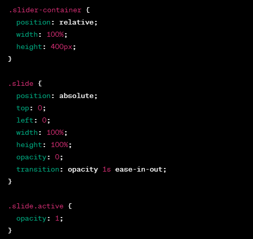
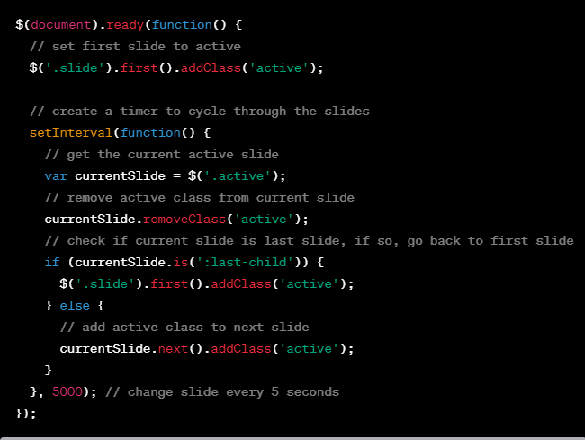
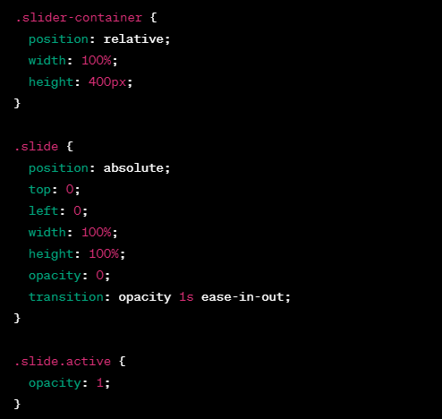
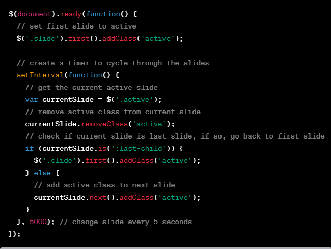

MODULE: 5 (JQuery Basic, Effects & Advance)
Q.1-What is JQuery?
jQuery is a lightweight, "write less, do more", JavaScript library.
The purpose of jQuery is to make it much easier to use JavaScript on your website.jQuery takes a lot of common tasks that require many lines of JavaScript code to accomplish, and wraps them into methods that you can call with a single line of code.The jQuery library contains the following features:
- HTML/DOM manipulation
- CSS manipulation
- HTML event methods
- Effects and animations
Q.2-How to Apply CSS Using JQuery, How to Add Class and Remove Class in JQuery, JQuery Animation?
Applying CSS using JQuery:
To apply CSS using jQuery, you can use the css() method. This method allows you to set or retrieve the value of a CSS property for a selected element. For example, to set the background-color property of a div element using jQuery, you can use the following code:

Adding and Removing Class in JQuery: To add a class to an element using jQuery, you can use the addClass() method. For example, to add the class highlight to all div elements, you can use the following code:

To remove a class from an element using jQuery, you can use the removeClass() method. For example, to remove the class highlight from all div elements, you can use the following code:

JQuery Animation: JQuery provides a number of methods for creating animations on web pages. Some of the commonly used methods include animate(), fadeIn(), fadeOut(), slideUp(), slideDown(), and toggle(). Here's an example of how to use the animate() method to create an animation:

Q.3-How to create slider with animation?
Creating a slider with animation can be done using jQuery and CSS. Here are the general steps to create a basic slider with animation:
- Create an HTML structure for the slider. This usually consists of a container element to hold the slides, and individual slide elements that are positioned within the container.
- Add CSS styles to position the slides within the container and hide all slides except the first one.

- Use jQuery to add and remove the active class from the slide elements to control which one is displayed.

- You can add additional CSS styles and jQuery code to customize the slider with different animation effects or controls.

